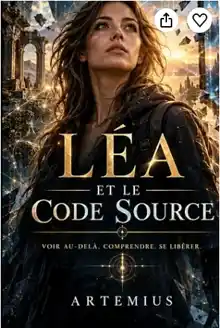

01 • Quête
Une recherche de sens
Un parcours personnel où curiosité, intuition et désir de comprendre se rencontrent.
Voir au-delà. Comprendre. Se libérer. Une histoire qui questionne notre perception du réel et invite à regarder autrement ce qui nous entoure.

En quête de vérité, Léa traverse un monde où les légendes rejoignent la science et où chaque découverte remet en question notre perception de l'univers. Une aventure spirituelle et philosophique qui invite le lecteur à voir au-delà, comprendre… et se libérer.
Un parcours personnel où curiosité, intuition et désir de comprendre se rencontrent.
Une fiction qui explore la frontière entre ce que nous percevons, ce que nous croyons et ce qui pourrait nous échapper.
Le monde du livre se prolonge dans les créations de Lea & Artemius, entre électronique, émotion et atmosphères cinématographiques.